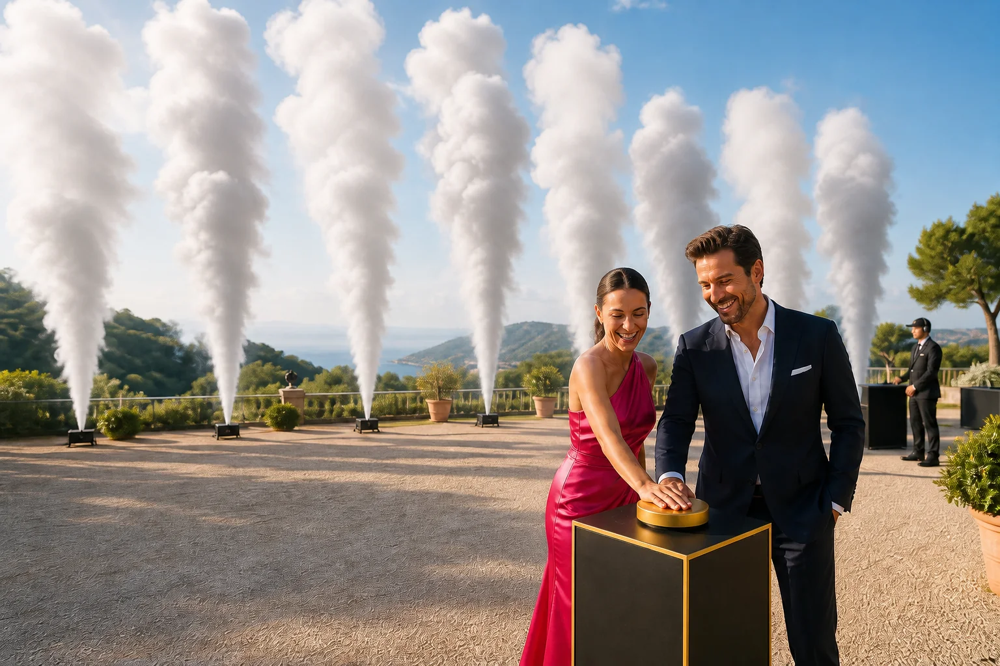
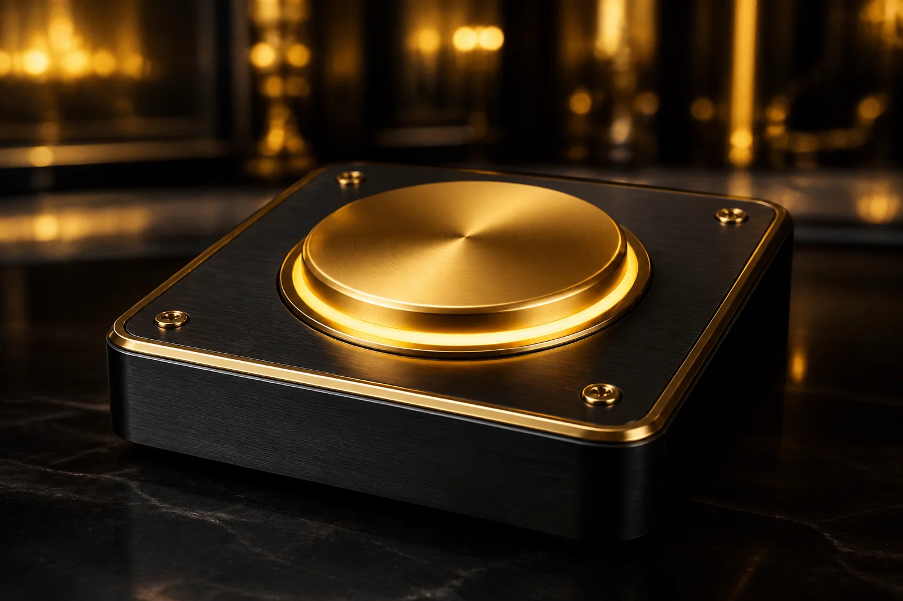
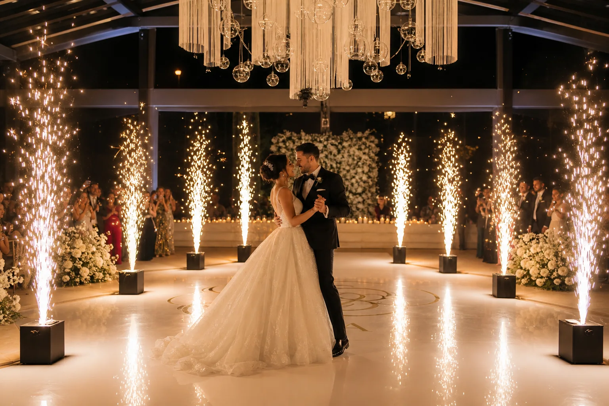
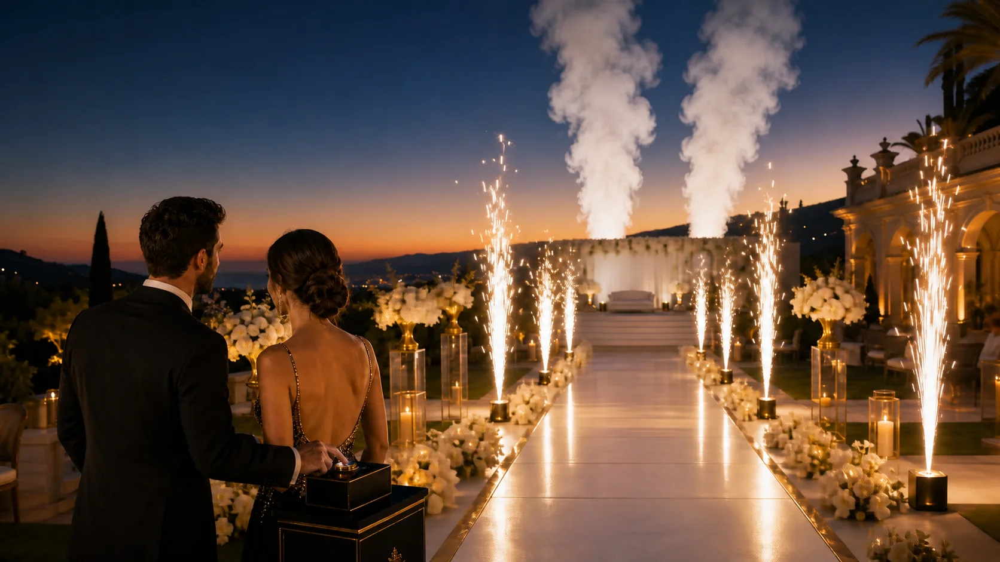

Efecto escénico
Pasarelas de fuegos fríos
Una entrada luminosa y simétrica para novios, protagonistas, artistas o invitados especiales.
- Entradas y salidas
- Arcos y pasarelas
- Finales de celebración
Diseñamos entradas, bailes y presentaciones con secuencias de luz, chispas frías, humo blanco y, en revelaciones de sexo, humo de color.
Pensamos dónde comienza, cómo crece y cuándo alcanza su punto más emocionante. La entrada, la música, la decoración y los efectos se coordinan para que todo ocurra en el instante perfecto.

Activación ceremonialPodemos preparar un pulsador ceremonial para que los protagonistas sientan que activan la experiencia. Al presionarlo comienza la secuencia visual diseñada para ese instante.

El pulsador forma parte de la puesta en escena. La preparación, configuración y supervisión de los efectos permanecen bajo control técnico.
La propuesta se adapta al espacio, al tipo de celebración y a la emoción que queréis provocar.
Una entrada luminosa y simétrica para novios, protagonistas, artistas o invitados especiales.
Una escena limpia y elegante para bodas, presentaciones y momentos preparados para fotografía y vídeo.
Los efectos pueden avanzar, rodear el espacio o construir un gran final.
Una forma teatral y emocionante de dar comienzo a la secuencia mediante un pulsador ceremonial.
Estas representaciones muestran cómo puede sentirse una propuesta completa. El diseño definitivo se adapta al lugar real, las distancias disponibles y el tipo de evento.


Imágenes conceptuales creadas para visualizar las posibilidades del servicio. La galería se ampliará con fotografías reales de los próximos montajes.
El mismo sistema permite crear experiencias muy diferentes según el espacio y el objetivo del evento.
Entrada, primer baile, corte de tarta o salida de los novios.
→02Revelación de sexoActivación con humo rosa, azul o una secuencia combinada.
→Un recorrido de luz secuencial para protagonistas, artistas o invitados especiales.
Efectos simétricos que enmarcan la entrada y reciben a los asistentes.
Una aparición visual coordinada con música, iluminación y cuenta atrás.
Un inicio llamativo para aperturas de espacios, locales o nuevas instalaciones.
Entradas de ganadores, momentos de reconocimiento y cierres de gala.
Presentaciones de marca, convenciones, aniversarios y celebraciones de empresa.
Cumpleaños, aniversarios y finales de fiesta con una escena propia.
Para preparar una propuesta necesitamos conocer el lugar, la fecha, el momento que queréis destacar y el resultado visual que imagináis.
Contar mi idea por WhatsApp →Fecha, espacio, horario, público y momento protagonista.
Número de puntos, disposición, colores y ritmo de la secuencia.
Espacio útil, distancias, autorizaciones y requisitos del lugar.
Montaje, supervisión y señal de comienzo para que todo encaje.
Cada servicio está sujeto a las características del espacio, la categoría e instrucciones de los artículos utilizados, las distancias de seguridad y las autorizaciones que correspondan. No todos los efectos son adecuados para todos los recintos.
La disponibilidad final se confirma después de revisar el lugar y las condiciones del evento.
Cuéntanos qué quieres celebrar y diseñaremos una propuesta visual adaptada a tu espacio.
Solicitar propuesta →